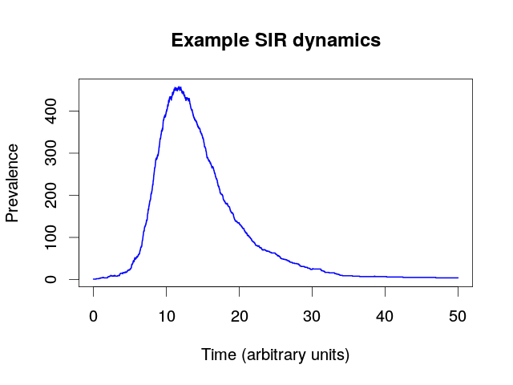
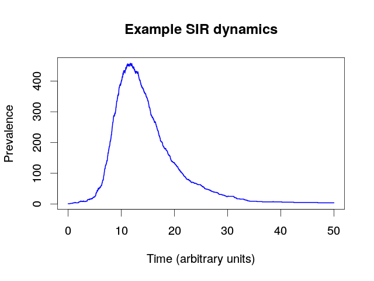
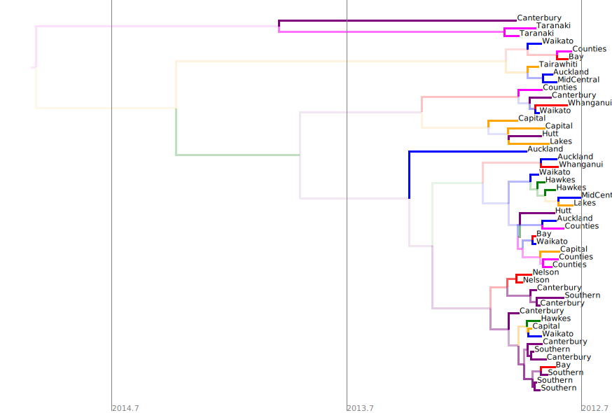
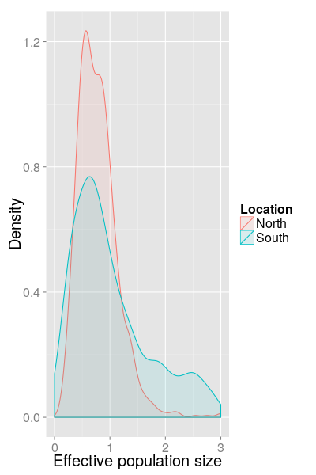

Exploring the Phylodynamics of seasonal influenza in New Zealand
One Health Symposium, Wellington, March 2016
Phylodynamics
- Term introduced by Grenfell et al. (Science, 2004)
- Refers to the interplay between "immunodynamics, epidemiology and evolutionary biology", and the effect this has on the shape of pathogen phylogenies.

Volz and Bedford, 2013
Influenza
- RNA virus with a 14 kb genome consisting of 8 distinct segments.
- Evolving $\sim 10^6$ times faster than human genome: measurably evolving pathogen.
- Seasonal epidemics occur repeatably around the world in predictable order.
Perfect system for the application of phylodynamic methods.
Questions
Can the evolution be explained by an unstructured model of prevalence dynamics?
If not, how does population structure influence the pathogen evolution?
Is there evidence for multiple introductions during a single season?
Inferring prevalence dynamics
The SIR model
- Susceptible-Infectious-Removed
- Described graphically as a Stochastic Petri Network:
 

Relationship between SIR model and genetic data
- The SIR model and sampling process generates an epidemic trajectory $C$ including sampling events.
- The generates a sampled transmission tree $T$.
- Influenza genes evolve down this tree to produce an alignment $A$.
\[ P(T,C|A) \propto P(A|T) P(T|C) P(C|\theta) P(\theta) \]
How do we sample the $(T,C)$ state space?
See David Welch's talk this afternoon!
SIR prevalence from SHIVERS data
- Restrict analysis to 2012 genomes only.
- Sampling occurs at a rate proportional to prevalence during the sampled months, is zero at other times.
SHIVERS Year 1 April Report
Phylogeography of seasonal epidemics
Potential for phylogeographic analyses
- Each SHIVERS genome tagged with location down to DHB-level.
- Have evaluated two distinct phylogeographic inference methods:
- Discrete trait phylogeography ("mugration") model. [Lemey, Rambaut and Drummond, 2009]
- Structured coalescent model.
[Hudson, 1990; Notohara, 1990]
Neither of these models deal explicitly with the epidemiological dynamics: to do!
Mugration results (DHB, 2012)
SC results (North/South, 2012)


SC results (North/South, 2013)

SC results (North/South, 2014)
Detecting multiple introductions
Qualitative evidence
Summary tree lineage count at the season start is a rough estimate for the introduction count.
8

8
10
Semi-quantitative evidence
Use distribution of sampled tree lineage counts at season start as proxy for intro. count posterior.


North/South/World model
Use structured coalescent model to explicitly model introductions using an additional World deme.
Posterior for 2012 introductions
Summary
- Seasonal influenza evolution is not well described by an unstructured compartmental model.
- Population structure, particularly the North/South island split, shapes the evolution.
- There does seem to be evidence for multiple introductions within a single season.
Thank you for listening!